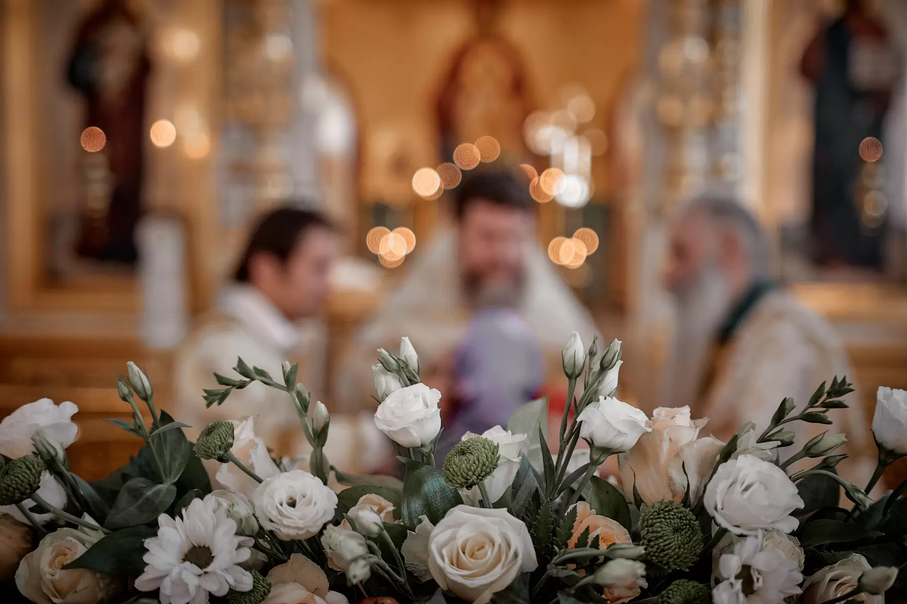

Контакты
Храм открыт
ежедневно, 8:00–20:00
Как добраться
- Из Москвы: от метро «Домодедовская» автобусами № 364, 367, 439, 466 до остановки «Совхоз им. Ленина», дальше 5 минут пешком вглубь посёлка. Ориентир — оранжевый Дворец культуры.
- Из Видного: автобусом № 364 до остановки «Совхоз им. Ленина» или № 471 до остановки «Каширское шоссе / ВЕГАС / Твой Дом», дальше 20 минут пешком вокруг ТЦ «Вегас» к жилому массиву.
- Из Домодедова: автобусом № 466 до остановки «Совхоз им. Ленина».
Задать вопрос
Вопрос на духовную тему или о жизни прихода — священник или сотрудник храма ответит вам.